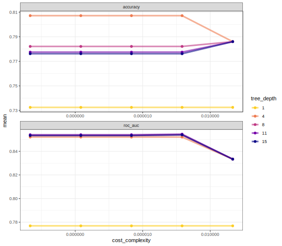
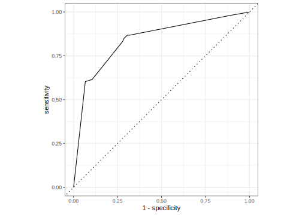
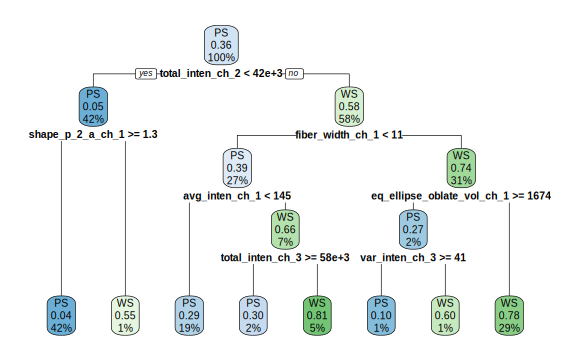

library(tidymodels) # for the tune package, along with the rest of tidymodels
# Helper packages
library(rpart.plot) # for visualizing a decision tree
library(vip) # for variable importance plotsTune model parameters
tuning
rsample
parsnip
tune
dials
workflows
yardstick
Estimate the best values for hyperparameters that cannot be learned directly during model training.
Introduction
Some model parameters cannot be learned directly from a data set during model training; these kinds of parameters are called hyperparameters. Some examples of hyperparameters include the number of predictors that are sampled at splits in a tree-based model (we call this mtry in tidymodels) or the learning rate in a boosted tree model (we call this learn_rate). Instead of learning these kinds of hyperparameters during model training, we can estimate the best values for these values by training many models on resampled data sets and exploring how well all these models perform. This process is called tuning.
To use code in this article, you will need to install the following packages: rpart, rpart.plot, tidymodels, and vip.
The cell image data, revisited
In our previous Evaluate your model with resampling article, we introduced a data set of images of cells that were labeled by experts as well-segmented (WS) or poorly segmented (PS). We trained a random forest model to predict which images are segmented well vs. poorly, so that a biologist could filter out poorly segmented cell images in their analysis. We used resampling to estimate the performance of our model on this data.
data(cells, package = "modeldata")
cells
#> # A tibble: 2,019 × 58
#> case class angle_ch_1 area_ch_1 avg_inten_ch_1 avg_inten_ch_2 avg_inten_ch_3
#> <fct> <fct> <dbl> <int> <dbl> <dbl> <dbl>
#> 1 Test PS 143. 185 15.7 4.95 9.55
#> 2 Train PS 134. 819 31.9 207. 69.9
#> 3 Train WS 107. 431 28.0 116. 63.9
#> 4 Train PS 69.2 298 19.5 102. 28.2
#> 5 Test PS 2.89 285 24.3 112. 20.5
#> 6 Test WS 40.7 172 326. 654. 129.
#> 7 Test WS 174. 177 260. 596. 124.
#> 8 Test PS 180. 251 18.3 5.73 17.2
#> 9 Test WS 18.9 495 16.1 89.5 13.7
#> 10 Test WS 153. 384 17.7 89.9 20.4
#> # ℹ 2,009 more rows
#> # ℹ 51 more variables: avg_inten_ch_4 <dbl>, convex_hull_area_ratio_ch_1 <dbl>,
#> # convex_hull_perim_ratio_ch_1 <dbl>, diff_inten_density_ch_1 <dbl>,
#> # diff_inten_density_ch_3 <dbl>, diff_inten_density_ch_4 <dbl>,
#> # entropy_inten_ch_1 <dbl>, entropy_inten_ch_3 <dbl>,
#> # entropy_inten_ch_4 <dbl>, eq_circ_diam_ch_1 <dbl>,
#> # eq_ellipse_lwr_ch_1 <dbl>, eq_ellipse_oblate_vol_ch_1 <dbl>, …Predicting image segmentation, but better
Random forest models are a tree-based ensemble method, and typically perform well with default hyperparameters. However, the accuracy of some other tree-based models, such as boosted tree models or decision tree models, can be sensitive to the values of hyperparameters. In this article, we will train a decision tree model. There are several hyperparameters for decision tree models that can be tuned for better performance. Let’s explore:
- the complexity parameter (which we call
cost_complexityin tidymodels) for the tree, and - the maximum
tree_depth.
Tuning these hyperparameters can improve model performance because decision tree models are prone to overfitting. This happens because single tree models tend to fit the training data too well — so well, in fact, that they over-learn patterns present in the training data that end up being detrimental when predicting new data.
We will tune the model hyperparameters to avoid overfitting. Tuning the value of cost_complexity helps by pruning back our tree. It adds a cost, or penalty, to error rates of more complex trees; a cost closer to zero decreases the number tree nodes pruned and is more likely to result in an overfit tree. However, a high cost increases the number of tree nodes pruned and can result in the opposite problem—an underfit tree. Tuning tree_depth, on the other hand, helps by stopping our tree from growing after it reaches a certain depth. We want to tune these hyperparameters to find what those two values should be for our model to do the best job predicting image segmentation.
Before we start the tuning process, we split our data into training and testing sets, just like when we trained the model with one default set of hyperparameters. As before, we can use strata = class if we want our training and testing sets to be created using stratified sampling so that both have the same proportion of both kinds of segmentation.
set.seed(123)
cell_split <- initial_split(cells %>% select(-case),
strata = class)
cell_train <- training(cell_split)
cell_test <- testing(cell_split)We use the training data for tuning the model.
Tuning hyperparameters
Let’s start with the parsnip package, using a decision_tree() model with the rpart engine. To tune the decision tree hyperparameters cost_complexity and tree_depth, we create a model specification that identifies which hyperparameters we plan to tune.
tune_spec <-
decision_tree(
cost_complexity = tune(),
tree_depth = tune()
) %>%
set_engine("rpart") %>%
set_mode("classification")
tune_spec
#> Decision Tree Model Specification (classification)
#>
#> Main Arguments:
#> cost_complexity = tune()
#> tree_depth = tune()
#>
#> Computational engine: rpartThink of tune() here as a placeholder. After the tuning process, we will select a single numeric value for each of these hyperparameters. For now, we specify our parsnip model object and identify the hyperparameters we will tune().
We can’t train this specification on a single data set (such as the entire training set) and learn what the hyperparameter values should be, but we can train many models using resampled data and see which models turn out best. We can create a regular grid of values to try using some convenience functions for each hyperparameter:
tree_grid <- grid_regular(cost_complexity(),
tree_depth(),
levels = 5)The function grid_regular() is from the dials package. It chooses sensible values to try for each hyperparameter; here, we asked for 5 of each. Since we have two to tune, grid_regular() returns 5 \(\times\) 5 = 25 different possible tuning combinations to try in a tidy tibble format.
tree_grid
#> # A tibble: 25 × 2
#> cost_complexity tree_depth
#> <dbl> <int>
#> 1 0.0000000001 1
#> 2 0.0000000178 1
#> 3 0.00000316 1
#> 4 0.000562 1
#> 5 0.1 1
#> 6 0.0000000001 4
#> 7 0.0000000178 4
#> 8 0.00000316 4
#> 9 0.000562 4
#> 10 0.1 4
#> # ℹ 15 more rowsHere, you can see all 5 values of cost_complexity ranging up to 0.1. These values get repeated for each of the 5 values of tree_depth:
tree_grid %>%
count(tree_depth)
#> # A tibble: 5 × 2
#> tree_depth n
#> <int> <int>
#> 1 1 5
#> 2 4 5
#> 3 8 5
#> 4 11 5
#> 5 15 5Armed with our grid filled with 25 candidate decision tree models, let’s create cross-validation folds for tuning:
set.seed(234)
cell_folds <- vfold_cv(cell_train)Tuning in tidymodels requires a resampled object created with the rsample package.
Model tuning with a grid
We are ready to tune! Let’s use tune_grid() to fit models at all the different values we chose for each tuned hyperparameter. There are several options for building the object for tuning:
Tune a model specification along with a recipe or model, or
Tune a
workflow()that bundles together a model specification and a recipe or model preprocessor.
Here we use a workflow() with a straightforward formula; if this model required more involved data preprocessing, we could use add_recipe() instead of add_formula().
set.seed(345)
tree_wf <- workflow() %>%
add_model(tune_spec) %>%
add_formula(class ~ .)
tree_res <-
tree_wf %>%
tune_grid(
resamples = cell_folds,
grid = tree_grid
)
tree_res
#> # Tuning results
#> # 10-fold cross-validation
#> # A tibble: 10 × 4
#> splits id .metrics .notes
#> <list> <chr> <list> <list>
#> 1 <split [1362/152]> Fold01 <tibble [50 × 6]> <tibble [0 × 3]>
#> 2 <split [1362/152]> Fold02 <tibble [50 × 6]> <tibble [0 × 3]>
#> 3 <split [1362/152]> Fold03 <tibble [50 × 6]> <tibble [0 × 3]>
#> 4 <split [1362/152]> Fold04 <tibble [50 × 6]> <tibble [0 × 3]>
#> 5 <split [1363/151]> Fold05 <tibble [50 × 6]> <tibble [0 × 3]>
#> 6 <split [1363/151]> Fold06 <tibble [50 × 6]> <tibble [0 × 3]>
#> 7 <split [1363/151]> Fold07 <tibble [50 × 6]> <tibble [0 × 3]>
#> 8 <split [1363/151]> Fold08 <tibble [50 × 6]> <tibble [0 × 3]>
#> 9 <split [1363/151]> Fold09 <tibble [50 × 6]> <tibble [0 × 3]>
#> 10 <split [1363/151]> Fold10 <tibble [50 × 6]> <tibble [0 × 3]>Once we have our tuning results, we can both explore them through visualization and then select the best result. The function collect_metrics() gives us a tidy tibble with all the results. We had 25 candidate models and two metrics, accuracy and roc_auc, and we get a row for each .metric and model.
tree_res %>%
collect_metrics()
#> # A tibble: 50 × 8
#> cost_complexity tree_depth .metric .estimator mean n std_err .config
#> <dbl> <int> <chr> <chr> <dbl> <int> <dbl> <chr>
#> 1 0.0000000001 1 accuracy binary 0.732 10 0.0148 Preproces…
#> 2 0.0000000001 1 roc_auc binary 0.777 10 0.0107 Preproces…
#> 3 0.0000000178 1 accuracy binary 0.732 10 0.0148 Preproces…
#> 4 0.0000000178 1 roc_auc binary 0.777 10 0.0107 Preproces…
#> 5 0.00000316 1 accuracy binary 0.732 10 0.0148 Preproces…
#> 6 0.00000316 1 roc_auc binary 0.777 10 0.0107 Preproces…
#> 7 0.000562 1 accuracy binary 0.732 10 0.0148 Preproces…
#> 8 0.000562 1 roc_auc binary 0.777 10 0.0107 Preproces…
#> 9 0.1 1 accuracy binary 0.732 10 0.0148 Preproces…
#> 10 0.1 1 roc_auc binary 0.777 10 0.0107 Preproces…
#> # ℹ 40 more rowsWe might get more out of plotting these results:
tree_res %>%
collect_metrics() %>%
mutate(tree_depth = factor(tree_depth)) %>%
ggplot(aes(cost_complexity, mean, color = tree_depth)) +
geom_line(size = 1.5, alpha = 0.6) +
geom_point(size = 2) +
facet_wrap(~ .metric, scales = "free", nrow = 2) +
scale_x_log10(labels = scales::label_number()) +
scale_color_viridis_d(option = "plasma", begin = .9, end = 0)
#> Warning: Using `size` aesthetic for lines was deprecated in ggplot2 3.4.0.
#> ℹ Please use `linewidth` instead.
We can see that our “stubbiest” tree, with a depth of 1, is the worst model according to both metrics and across all candidate values of cost_complexity. Our deepest tree, with a depth of 15, did better. However, the best tree seems to be between these values with a tree depth of 4. The show_best() function shows us the top 5 candidate models by default:
tree_res %>%
show_best("accuracy")
#> # A tibble: 5 × 8
#> cost_complexity tree_depth .metric .estimator mean n std_err .config
#> <dbl> <int> <chr> <chr> <dbl> <int> <dbl> <chr>
#> 1 0.0000000001 4 accuracy binary 0.807 10 0.0119 Preprocess…
#> 2 0.0000000178 4 accuracy binary 0.807 10 0.0119 Preprocess…
#> 3 0.00000316 4 accuracy binary 0.807 10 0.0119 Preprocess…
#> 4 0.000562 4 accuracy binary 0.807 10 0.0119 Preprocess…
#> 5 0.1 4 accuracy binary 0.786 10 0.0124 Preprocess…We can also use the select_best() function to pull out the single set of hyperparameter values for our best decision tree model:
best_tree <- tree_res %>%
select_best("accuracy")
best_tree
#> # A tibble: 1 × 3
#> cost_complexity tree_depth .config
#> <dbl> <int> <chr>
#> 1 0.0000000001 4 Preprocessor1_Model06These are the values for tree_depth and cost_complexity that maximize accuracy in this data set of cell images.
Finalizing our model
We can update (or “finalize”) our workflow object tree_wf with the values from select_best().
final_wf <-
tree_wf %>%
finalize_workflow(best_tree)
final_wf
#> ══ Workflow ══════════════════════════════════════════════════════════
#> Preprocessor: Formula
#> Model: decision_tree()
#>
#> ── Preprocessor ──────────────────────────────────────────────────────
#> class ~ .
#>
#> ── Model ─────────────────────────────────────────────────────────────
#> Decision Tree Model Specification (classification)
#>
#> Main Arguments:
#> cost_complexity = 1e-10
#> tree_depth = 4
#>
#> Computational engine: rpartOur tuning is done!
The last fit
Finally, let’s fit this final model to the training data and use our test data to estimate the model performance we expect to see with new data. We can use the function last_fit() with our finalized model; this function fits the finalized model on the full training data set and evaluates the finalized model on the testing data.
final_fit <-
final_wf %>%
last_fit(cell_split)
final_fit %>%
collect_metrics()
#> # A tibble: 2 × 4
#> .metric .estimator .estimate .config
#> <chr> <chr> <dbl> <chr>
#> 1 accuracy binary 0.802 Preprocessor1_Model1
#> 2 roc_auc binary 0.840 Preprocessor1_Model1
final_fit %>%
collect_predictions() %>%
roc_curve(class, .pred_PS) %>%
autoplot()
The performance metrics from the test set indicate that we did not overfit during our tuning procedure.
The final_fit object contains a finalized, fitted workflow that you can use for predicting on new data or further understanding the results. You may want to extract this object, using one of the extract_ helper functions.
final_tree <- extract_workflow(final_fit)
final_tree
#> ══ Workflow [trained] ════════════════════════════════════════════════
#> Preprocessor: Formula
#> Model: decision_tree()
#>
#> ── Preprocessor ──────────────────────────────────────────────────────
#> class ~ .
#>
#> ── Model ─────────────────────────────────────────────────────────────
#> n= 1514
#>
#> node), split, n, loss, yval, (yprob)
#> * denotes terminal node
#>
#> 1) root 1514 539 PS (0.64398943 0.35601057)
#> 2) total_inten_ch_2< 41732.5 642 33 PS (0.94859813 0.05140187)
#> 4) shape_p_2_a_ch_1>=1.251801 631 27 PS (0.95721078 0.04278922) *
#> 5) shape_p_2_a_ch_1< 1.251801 11 5 WS (0.45454545 0.54545455) *
#> 3) total_inten_ch_2>=41732.5 872 366 WS (0.41972477 0.58027523)
#> 6) fiber_width_ch_1< 11.37318 406 160 PS (0.60591133 0.39408867)
#> 12) avg_inten_ch_1< 145.4883 293 85 PS (0.70989761 0.29010239) *
#> 13) avg_inten_ch_1>=145.4883 113 38 WS (0.33628319 0.66371681)
#> 26) total_inten_ch_3>=57919.5 33 10 PS (0.69696970 0.30303030) *
#> 27) total_inten_ch_3< 57919.5 80 15 WS (0.18750000 0.81250000) *
#> 7) fiber_width_ch_1>=11.37318 466 120 WS (0.25751073 0.74248927)
#> 14) eq_ellipse_oblate_vol_ch_1>=1673.942 30 8 PS (0.73333333 0.26666667)
#> 28) var_inten_ch_3>=41.10858 20 2 PS (0.90000000 0.10000000) *
#> 29) var_inten_ch_3< 41.10858 10 4 WS (0.40000000 0.60000000) *
#> 15) eq_ellipse_oblate_vol_ch_1< 1673.942 436 98 WS (0.22477064 0.77522936) *We can create a visualization of the decision tree using another helper function to extract the underlying engine-specific fit.
final_tree %>%
extract_fit_engine() %>%
rpart.plot(roundint = FALSE)
Perhaps we would also like to understand what variables are important in this final model. We can use the vip package to estimate variable importance based on the model’s structure.
library(vip)
final_tree %>%
extract_fit_parsnip() %>%
vip()
These are the automated image analysis measurements that are the most important in driving segmentation quality predictions.
We leave it to the reader to explore whether you can tune a different decision tree hyperparameter. You can explore the reference docs, or use the args() function to see which parsnip object arguments are available:
args(decision_tree)
#> function (mode = "unknown", engine = "rpart", cost_complexity = NULL,
#> tree_depth = NULL, min_n = NULL)
#> NULLYou could tune the other hyperparameter we didn’t use here, min_n, which sets the minimum n to split at any node. This is another early stopping method for decision trees that can help prevent overfitting. Use this searchable table to find the original argument for min_n in the rpart package (hint). See whether you can tune a different combination of hyperparameters and/or values to improve a tree’s ability to predict cell segmentation quality.
Session information
#> ─ Session info ─────────────────────────────────────────────────────
#> setting value
#> version R version 4.3.0 (2023-04-21)
#> os macOS Monterey 12.6
#> system aarch64, darwin20
#> ui X11
#> language (EN)
#> collate en_US.UTF-8
#> ctype en_US.UTF-8
#> tz America/Los_Angeles
#> date 2023-05-25
#> pandoc 3.1.1 @ /Applications/RStudio.app/Contents/Resources/app/quarto/bin/tools/ (via rmarkdown)
#>
#> ─ Packages ─────────────────────────────────────────────────────────
#> package * version date (UTC) lib source
#> broom * 1.0.4 2023-03-11 [1] CRAN (R 4.3.0)
#> dials * 1.2.0 2023-04-03 [1] CRAN (R 4.3.0)
#> dplyr * 1.1.2 2023-04-20 [1] CRAN (R 4.3.0)
#> ggplot2 * 3.4.2 2023-04-03 [1] CRAN (R 4.3.0)
#> infer * 1.0.4 2022-12-02 [1] CRAN (R 4.3.0)
#> parsnip * 1.1.0 2023-04-12 [1] CRAN (R 4.3.0)
#> purrr * 1.0.1 2023-01-10 [1] CRAN (R 4.3.0)
#> recipes * 1.0.6 2023-04-25 [1] CRAN (R 4.3.0)
#> rlang 1.1.1 2023-04-28 [1] CRAN (R 4.3.0)
#> rpart * 4.1.19 2022-10-21 [2] CRAN (R 4.3.0)
#> rpart.plot * 3.1.1 2022-05-21 [1] CRAN (R 4.3.0)
#> rsample * 1.1.1 2022-12-07 [1] CRAN (R 4.3.0)
#> tibble * 3.2.1 2023-03-20 [1] CRAN (R 4.3.0)
#> tidymodels * 1.1.0 2023-05-01 [1] CRAN (R 4.3.0)
#> tune * 1.1.1 2023-04-11 [1] CRAN (R 4.3.0)
#> vip * 0.3.2 2020-12-17 [1] CRAN (R 4.3.0)
#> workflows * 1.1.3 2023-02-22 [1] CRAN (R 4.3.0)
#> yardstick * 1.2.0 2023-04-21 [1] CRAN (R 4.3.0)
#>
#> [1] /Users/emilhvitfeldt/Library/R/arm64/4.3/library
#> [2] /Library/Frameworks/R.framework/Versions/4.3-arm64/Resources/library
#>
#> ────────────────────────────────────────────────────────────────────